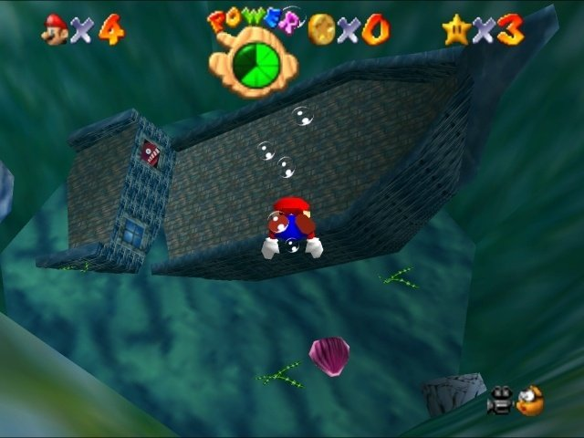
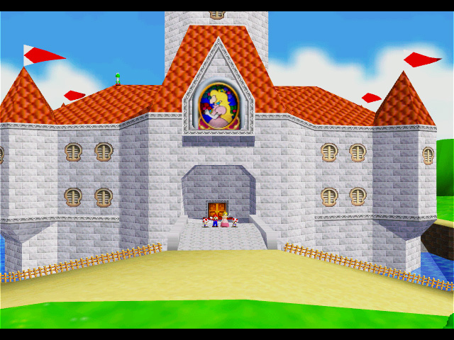

Levels
Worlds to explore
This game is what is called a Collect-a-thon. Collect-a-thons are games with open worlds where you collect a variety of different items and complete objectives. The major item to collect in this game are the Power Stars. The Power Stars and how many of them you have mark your progress through the game, as each area of the castle becomes accessible the more you have. To get them, you must complete a verity of missions in each level. The castle is the main hub between each of levels, and these levels are accessible via paintings/strange walls/open spaces in the wall or ground. The Castle itself is divided into 4 major sections. Between the 1st and 2nd and the 2nd and 3rd, there is a door with a keyhole blocking the way. Between the 3rd and 4th sections, there is a major Star door, which requires a lot of stars and opens the way to the final bowser fight. Each level has 6 stars that come from a variety of missions based in the level, plus 1 more from collecting 100 coins. The worlds are as follows.
| World Name | Theme | Section |
| Bomb-omb Battle Field | Battlefield | 1 |
| Whomp's Fortress | Sky Castle | 1 |
| Jolly Rodger Bay | Oceanic Dock | 1 |
| Cool, Cool Mountain | Winter Mountain | 1 |
| Big Boo's Haunt | Haunted House | 1 |
| Hazy Maze Cave | Large Cave | 2 |
| Lethal Lava Land | Volcanic Land | 2 |
| Shifting Sand Land | Desert | 2 |
| Dire Dire Docks | Ocean | 2 |
| Snowman's Land | Wintry Field | 3 |
| Wet-Dry World | Sunken City | 3 |
| Tall, Tall Mountain | Large Mountain | 3 |
| Tiny-Huge Island | Sizable Island | 3 |
| Tick Tock Clock | Inside a Clock | 4 |
| Rainbow Ride | Sky | 4 |
Along with these levels having their 7 stars, there are also quiet a few other stars that go as follows.
|
120 stars and you've 100% the game.
But wait, There's more!
As a completion bonus for collecting all 120 stars, you can visit the top of the castle via a cannon whose grate is now open.
Along with the normal way to progress the game, there are other ways to finish it. There are a community of people known as Speed Runners who play the game using exploits and extras.